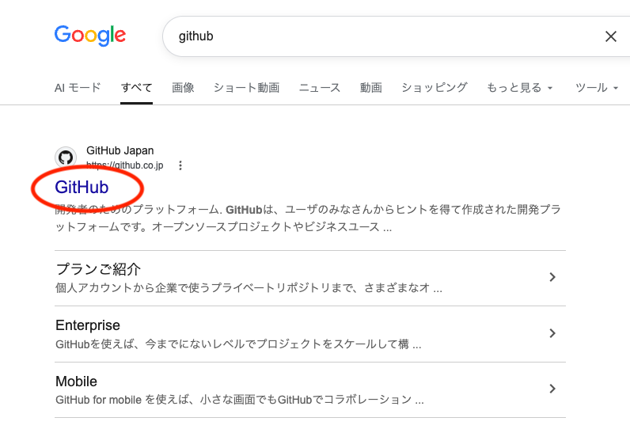
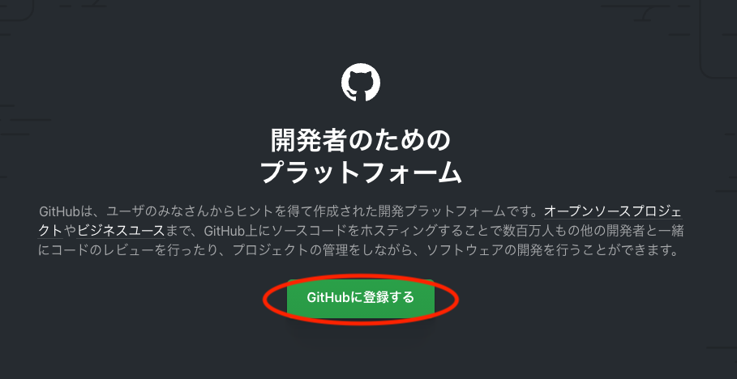
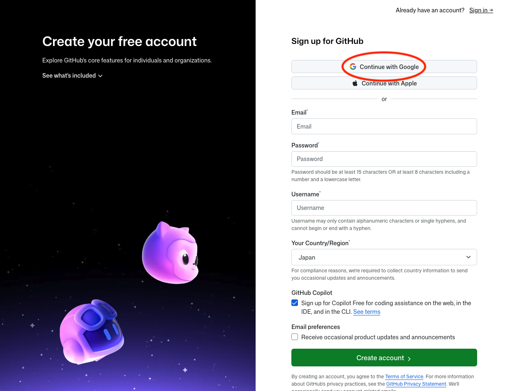
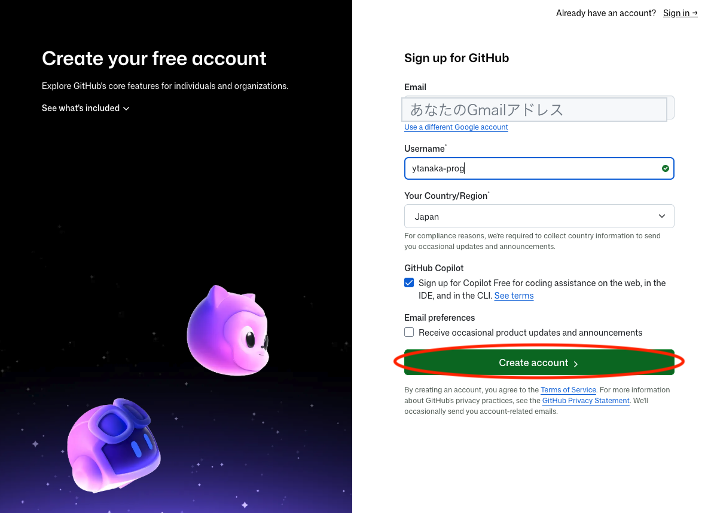
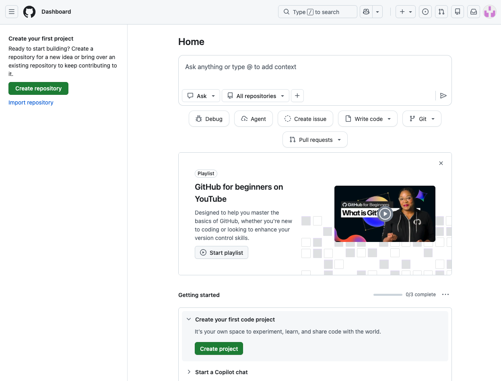

実際の画面を見ながら、GitHubのアカウントを作ります。ここではGoogleアカウント連携で作る手順を紹介します（パスワードを増やさずに済み、学校でのGoogle運用とも相性がよい方法です）。所要3分。
検索で「github」と入れ、GitHub Japan（github.co.jp）を開きます。アドレスバーに github.co.jp と直接入力してもかまいません（検索結果には広告が混ざることがあるため、URL直打ちのほうが確実です）。

トップページ中央の緑のボタン「GitHubに登録する」をクリックします。英語ページに切り替わりますが、入力するのはこの後の1画面だけです。

登録画面の最上部にある「Continue with Google」をクリックし、使うGoogleアカウントを選びます。メール欄・パスワード欄は入力不要になります。ふだん使いのブラウザに複数のGoogleアカウントが入っている場合は、どのアカウントを選んだかをメモしておきましょう（次回のログインで同じものを選びます）。

メール欄にはGoogleアカウントのアドレスが自動で入ります。自分で決めるのはUsername（ユーザー名）だけです。
入力欄の右端に緑のチェックが付いたら、「Create account」をクリックします。

この画面（Home／Dashboard）が表示されたら、アカウント作成は完了です。左上の「Create repository」ボタンは§2で使うので、今は押さなくてかまいません。
